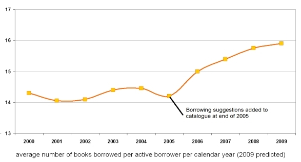

Recommendation algorithms
Recommending resources is extremely powerful for users. For instance, it is essential to
Amazon's business model where they use people who bought X also bought Y to encourage
increased business. Similarly, Huddersfield University has seen an increase in library borrowing
since they introduced a recommender system to the OPAC.

This clearly demonstrates the value that users gain from having recommendations.
The MOSAIC Project produced a recommender system before this Programme, details appear
from page 49 onwards in the MOSAIC project's final report
.
Different approaches to recommendation were used in three of the Programme’s projects: